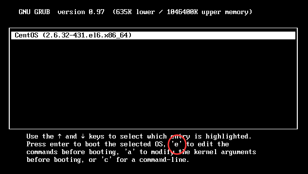
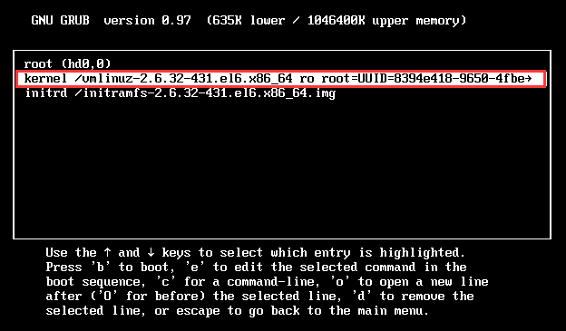
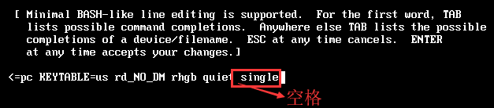
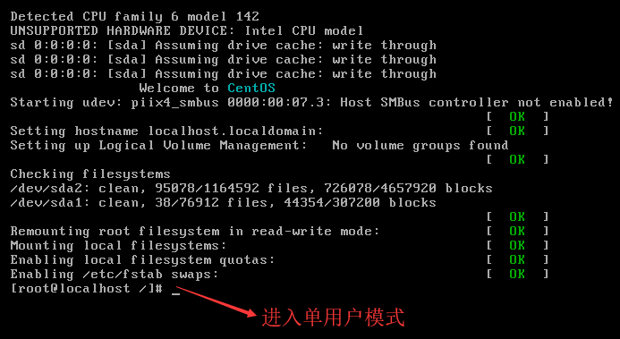
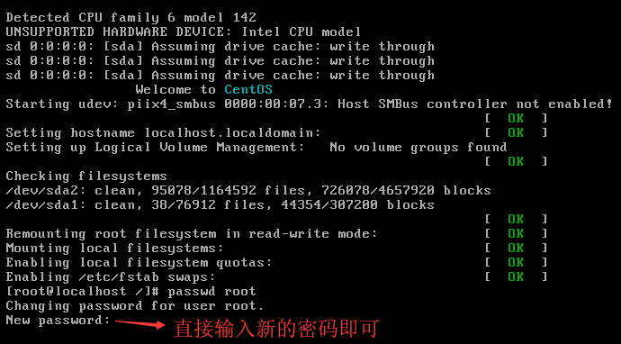
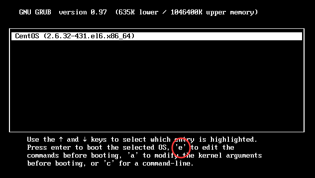
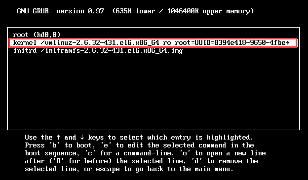
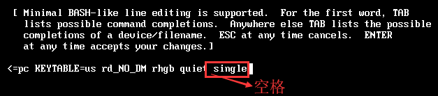
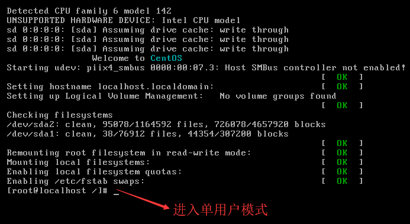
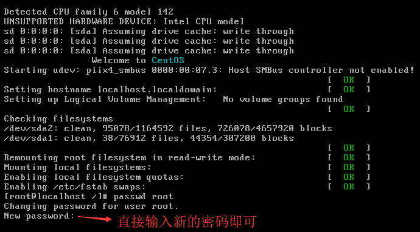

首页 > 编程笔记
Linux单用户模式（修改密码、运行级别）方法详解
很多新手当面对“忘记 root 账户密码导致无法登陆系统”这个问题时，直接选择重新系统。其实大可不必，我只需要进入 emergency mode（单用户模式）更新 root 账户的密码即可。
Linux 的单用户模式有些类似 Windows 的安全模式，只启动最少的程序用于系统修复。在单用户模式（运行级别为 1）中，Linux 引导进入根 Shell，网络被禁用，只有少数进程运行。
单用户模式可以用来修改文件系统损坏、还原配置文件、移动用户数据等。
首先需要重启服务器，在 GRUB 读秒界面按任意键，进入 GRUB 菜单界面，如图 1 所示。

图 1 GRUB菜单界面
在想要进入单用户模式的 Linux 菜单上按"e"键，就会进入 GRUB 编辑界面，如图 2 所示。

图 2 GRUB编辑界面
在 GRUB 编辑界面中，移动光标到第二行 kernel 行，然后继续按"e"键，进入行编辑界面。在此行最后输入"空格 single"，代表启动进入单用户模式（注意：空格必须存在），如图 3 所示。

图 3 GRUB行编辑界面
然后按回车键，就会回到上一个界面，如图 2 所示。再按"b"键（启动），就会启动进入单用户模式。单用户模式是不需要输入用户名和密码就能直接进入提示符界面的，如图 4 所示。

图 4 单用户模式提示符界面
我们已经登录了 Linux 系统的单用户模式，而且是不需要输入用户名和密码就可以直接进入的。这时如果有系统问题，就可以在单用户模式中进行修复了。

图 5 单用户模式修改 root 密码
Linux 的单用户模式有些类似 Windows 的安全模式，只启动最少的程序用于系统修复。在单用户模式（运行级别为 1）中，Linux 引导进入根 Shell，网络被禁用，只有少数进程运行。
单用户模式可以用来修改文件系统损坏、还原配置文件、移动用户数据等。
如何进入单用户模式
现在，我们假设系统出现了问题，已经不能正常登录了。那么，如何进入单用户模式呢？首先需要重启服务器，在 GRUB 读秒界面按任意键，进入 GRUB 菜单界面，如图 1 所示。

图 1 GRUB菜单界面
在想要进入单用户模式的 Linux 菜单上按"e"键，就会进入 GRUB 编辑界面，如图 2 所示。

图 2 GRUB编辑界面
在 GRUB 编辑界面中，移动光标到第二行 kernel 行，然后继续按"e"键，进入行编辑界面。在此行最后输入"空格 single"，代表启动进入单用户模式（注意：空格必须存在），如图 3 所示。

图 3 GRUB行编辑界面
然后按回车键，就会回到上一个界面，如图 2 所示。再按"b"键（启动），就会启动进入单用户模式。单用户模式是不需要输入用户名和密码就能直接进入提示符界面的，如图 4 所示。

图 4 单用户模式提示符界面
我们已经登录了 Linux 系统的单用户模式，而且是不需要输入用户名和密码就可以直接进入的。这时如果有系统问题，就可以在单用户模式中进行修复了。
单用户模式常见的错误修复
我们已经进入了单用户模式，那么我们在单用户模式中主要可以修复哪些系统错误呢？下面举几个例子。遗忘root密码
这是管理员最容易犯的错误，应该如何修复呢？当然是使用单用户模式进行修复了，因为进入单用户模式的最大特点就是不需要输入用户名和密码。既然已经登录了单用户模式，那么直接给 root 用户设定新密码即可。 命令如下：[root@localhost /]# passwd root
运行效果如图 5 所示。
图 5 单用户模式修改 root 密码
修改系统默认运行级别
如果我们把系统的默认运行级别修改错误，比如改为了 0 或 6，系统就不能正常启动了。这时也可以利用单用户模式进行修复，只需直接修改默认运行级别配置文件 /etc/inittab，把系统默认运行级别修改回来即可。命令如下：
[root@localhost /]# vi /etc/inittab
id:3:initdefault:
#把默认运行级别修改为3或5。注意：系统的默认运行级别只能使用3或5
关注公众号「站长严长生」，在手机上阅读所有教程，随时随地都能学习。内含一款搜索神器，免费下载全网书籍和视频。

微信扫码关注公众号